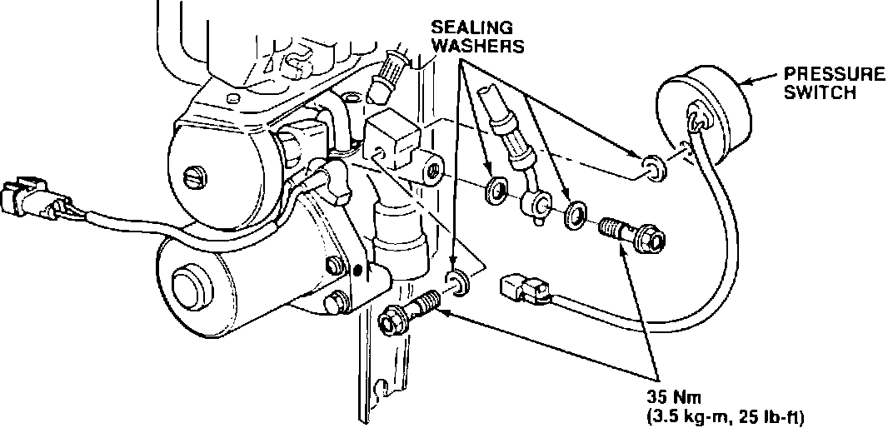
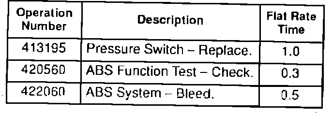

ABS Problem Code 1-8
YEAR1991 - 92
MODEL
LEGEND
VIN APPLICATION
ALL
August 18, 1992
BULLETIN NO.
91-031
ABS Problem Code 1-8 (Supersedes 91-031, dated May 20, 1991)
SYMPTOM
The ABS indicator light comes on, and when the service check connector is jumped, the indicator light displays problem code 1-8.
PROBABLE CAUSE
The ABS pump can restore system pressure very quickly. The actual pump run-time is so short that the ABS control unit interprets it to mean that the nitrogen in the accumulator has been depleted.

CORRECTIVE ACTION
Install a new pressure switch that turns the pump on at a slightly lower pressure and off at a slightly higher pressure.
1. Remove the ABS modulator/power unit assembly as described in Service Bulletin 91-026, "ABS Modulator Unit and Power Unit Replacement."
2. Remove the high-pressure hose from the pump so you can replace the pressure switch.
3. Remove the original pressure switch, and install the new switch using new sealing washers (see PARTS INFORMATION).
4. Reconnect the high-pressure hose using new sealing washers.
5. Reinstall the modulator/power unit assembly as described in Service Bulletin 91-026.
PARTS INFORMATION
Pressure switch - P/N 57390-SP0-305
Sealing washer
(four required): P/N 90545-300-000
WARRANTY CLAIM INFORMATION
In warranty:
The normal warranty applies.
Out of warranty:
Any repair pedormed after warranty expiration may be eligible for goodwill consideration by the District Service Manager. You must request consideration, and get the DSM's decision, before starting work.

Description
Failed P/N:
57390-SP0-013
Defect code:
074
Contention code:
B06